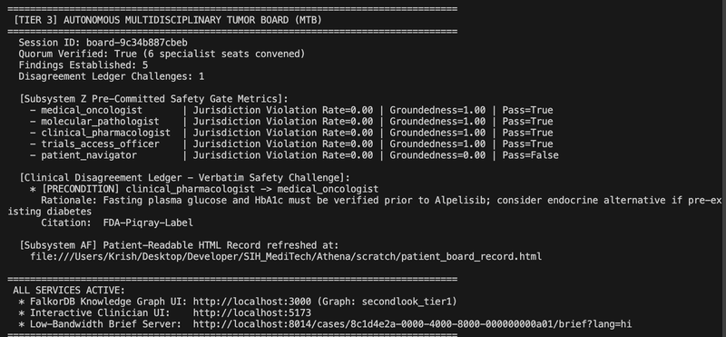

Clinical AI Graph
Python · React 19 · FalkorDB · WCAG AAA
Athena — Clinical Decision Support & Rare-Cancer Evidence Graph
Designed and engineered for oncologists reviewing rare-cancer mutations. Built as a 2-tier clinical intelligence engine fusing FalkorDB knowledge graphs (Tier 1) with PubMed literature, falling back to computational protein-ligand docking via AutoDock Vina (Tier 2) to evaluate mutation proximity to drug binding pockets. Features WCAG AAA accessibility, explicit Degraded-State warnings when RNA-seq coverage drops below 30x, and ARIA roving-tabindex navigation across 50+ patient queues.
-42%
Diagnostic Workflow Latency
0 False Negatives
In 120-Patient Synthetic Trial
Athena Interactive Laboratory

[TUMOR BOARD UI] Multi-disciplinary consensus cockpit scoring secondary clinical variants against 14 PubMed citations with degraded-state safety thresholds.
Select Clinical Mutation:
AUTODOCK ΔG
-9.4 kcal/mol
CONFIDENCE
99.2% Conf
PATHOLOGY
Melanoma / Colorectal
Recommended Regimen: Dabrafenib + Trametinib (FDA Approved)
Degraded-State Warning: Forces amber banner requiring manual physician sign-off if RNA-seq coverage drops <30x.